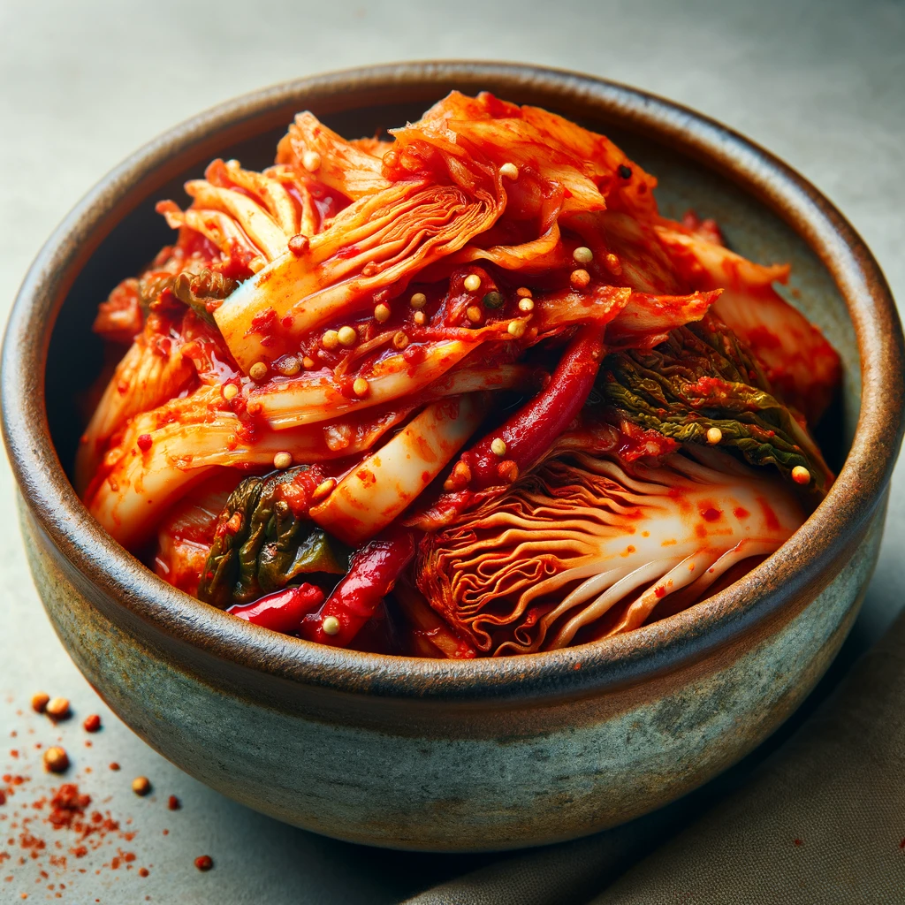

Kimchi

Craving Authentic Kimchi? Make it Yourself!
Tired of store-bought kimchi that lacks flavor and punch? Unleash the vibrant taste of homemade kimchi with our easy-to-follow recipe! ️
Ingredients
-
Napa cabbage (baechu)
-
Korean radish (daikon)
-
Gochugaru (Korean chili flakes)
-
Garlic
-
Ginger
-
Sea salt
-
Fish sauce
Recipe Instructions
-
Prepare the Napa Cabbage
-
Make the Kimchi Paste
-
Assemble the Kimchi
-
Ferment the Kimchi
-
Refrigerate and Enjoy
Next Recipe: Kefir
Previous Recipe: Sauerkraut
Home